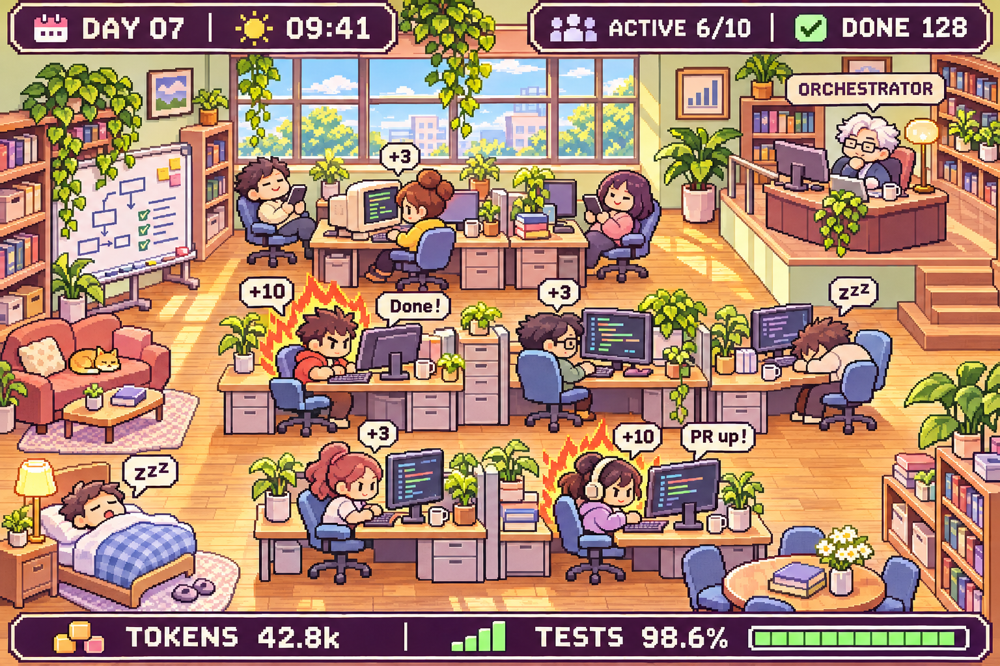
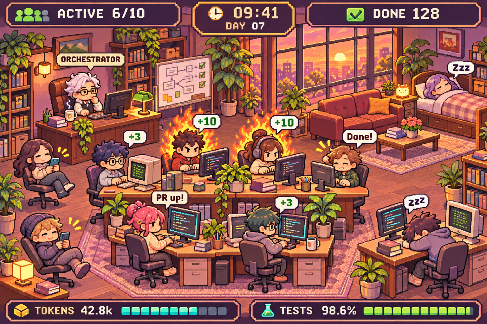
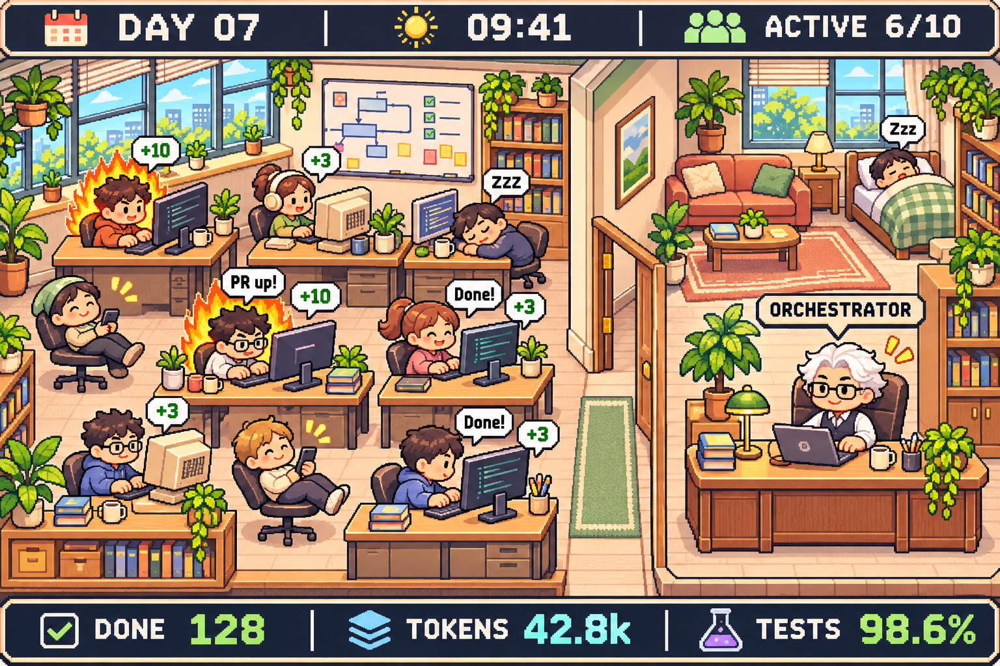

A — 낮 스튜디오
밝은 채광과 역할별 코너가 잘 읽힙니다.

B — 저녁 스튜디오
불꽃과 노을 조명이 몰입 상태를 강조합니다.

C — 두 칸 사무실
개발실과 관리자·휴식 구역을 명료하게 분리합니다.
이미지 생성으로 만든 픽셀 개발 스튜디오 3안. 이미지를 누르면 원본을 엽니다.
1536×1024 · 정적 콘셉트 · HUD는 목업입니다.

밝은 채광과 역할별 코너가 잘 읽힙니다.

불꽃과 노을 조명이 몰입 상태를 강조합니다.

개발실과 관리자·휴식 구역을 명료하게 분리합니다.